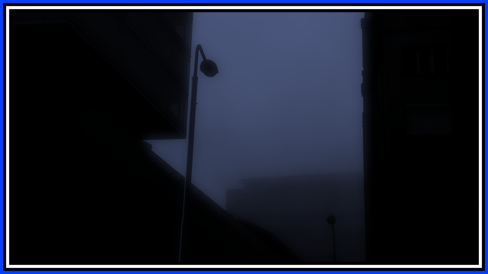

THE HAZE
The Haze is a realm that contains the concepts and ideas of certain realities as energy. With the human world (Magnatic Realm), the mind and identities of people are recorded, being preserved even after death. However, these records will quickly fade away if not they are not retained by special intervention.
For each person, the appearance of the Haze changes, with the most common being around last location they remembered being in before death. The realm appears identical to the original location, down to the surrounding life and machinery, only frozen in time. And as given by its name, the area is also covered in a dense fog, with light coming from just beyond the fog.
After one's death, the last record of that person gains sentience and is able to fully perceive the Haze, but after a few minutes, ceases to exist. Others in the realm perceive this phenomenon as them suddenly freezing, then making impossible movements like floating above the ground or phasing through solid matter before disappearing out of view.
Due to the nature of this realm, it does not occupy any physical space. All descriptions of the Haze in reality are from mental images given by the living with connections to the realm. Even though they remain alive, looking into the Haze changes them irreversibly. There are three types of these people: the Faceless, the Heartless, and the Soulless.